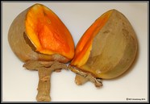

|  | Quararibea cordata fruit the South American sapote or chupa-chupa, is a large, semi-deciduous, fruit tree (up to 45m in height), native to Amazon rainforest vegetation in Brazil, Colombia, Ecuador, and Peru. It bears orange-yellow fruit which are soft, juicy, sweet and contain 2-5 seeds. Fruit is usually eaten out of hand, though it may be juiced. Although generally popular, fruit quality is variable, with some trees producing insipid or fibrous fruits and little work has been done in establishing preferred cultivars. It grows best in wet, deep soils, but can be killed by floods. Quararibea cordata is native to the foothills of the Andes, and is common throughout parts of Brazil, Venezuela, and Colombia. However, it is not widely cultivated. Chupa-chupa has failed to gain much international recognition and has not been widely planted outside its native range. In 1964, US pomologist Bill Whitman obtained seeds from Peru and planted a tree in his garden at Bal Harbour, Florida, where it has successfully fruited. |